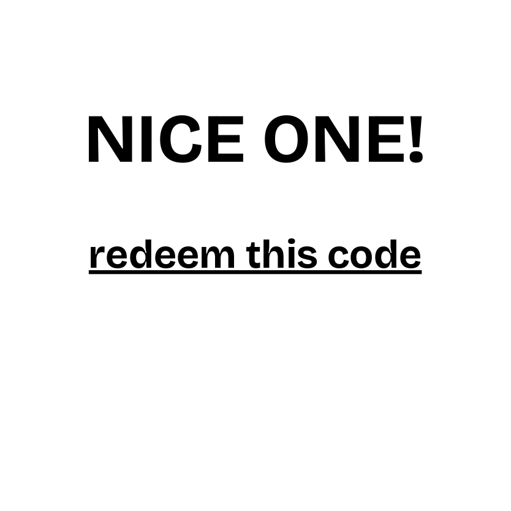

PDF password puzzle: solved
Puzzle posted by u/JuniorAppearance8347 on r/Decoders (original thread). Hints from the OP: BACON, HEX, BIBLE. Files: decode1.txt, decode1.pdf.
The digit 7 written 8 times. Verified: this opens decode1.pdf (the other ~60 candidates I tried did not).
1. What the text file contains
Three pieces of data, followed by about 30 blank lines and a stray 8x on the very last line:
47 65 6E 65 73 69 73 20 32 3A 32 2013 33 4C 65 76 69 74 69 63 75 73 20 32 35 3A 38 2013 31 30 aabab abaaa abbaa aaabb baaba aabbb aabaa aaaba abbab ababb ababb abbab abbaa baaba aabbb abaaa abbaa aabba (about 30 blank lines) 8x
2. HEX → Bible references
Each two-digit token is an ASCII byte in hex:
| Hex | Decodes to |
|---|---|
| 47 65 6E 65 73 69 73 20 32 3A 32 | Genesis 2:2 |
| 4C 65 76 69 74 69 63 75 73 20 32 35 3A 38 | Leviticus 25:8 |
The odd four-digit token 2013 is not a byte. It is U+2013, the EN DASH, the typographic mark for a range. The trailing tokens are the end of the range: 33 = "3" and 31 30 = "10". So the two passages are:
- Genesis 2:2–3: God rests on the seventh day and blesses it.
- Leviticus 25:8–10: seven sabbaths of years, "seven times seven", the seventh month, the jubilee.
3. BACON → the instruction
Each 5-symbol group is a 5-bit number (a=0, b=1). Using the 24-letter Baconian alphabet (I=J, U=V) gives plain English:
| Group | aabab | abaaa | abbaa | aaabb | baaba | aabbb | aabaa | aaaba | abbab | ababb | ababb | abbab | abbaa | baaba | aabbb | abaaa | abbaa | aabba |
|---|---|---|---|---|---|---|---|---|---|---|---|---|---|---|---|---|---|---|
| Value | 5 | 8 | 12 | 3 | 18 | 7 | 4 | 2 | 13 | 11 | 11 | 13 | 12 | 18 | 7 | 8 | 12 | 6 |
| Letter | F | I | N | D | T | H | E | C | O | M | M | O | N | T | H | I | N | G |
FIND THE COMMON THING, meaning the thing the two Bible passages have in common.
The 26-letter version of the same cipher gives FIMDSHECNLLNMSHIMG (gibberish), and the inverted bit assignments give junk with out-of-range values, so the 24-letter reading is the intended one.
4. The common thing: "seven"
The shared idea is the seventh: the seventh day (Gen 2:2–3), and the sabbaths, seven-times-seven, and seventh month (Lev 25:8–10). Counting every word that starts with "seven" in the King James text:
| Passage | "seven…" count | Where |
|---|---|---|
| Genesis 2:2–3 | 3 | "the seventh day" ×3 (2:2 twice, 2:3 once) |
| Leviticus 25:8–10 | 5 | "seven sabbaths", "seven times seven years", "the seven sabbaths" (25:8); "the seventh month" (25:9) |
| Total | 8 |
That total of 8 matches the stray 8x hidden at the bottom of the file after the blank lines: "seven", 8 times. The password is therefore the number 7 repeated 8 times.
77777777 actually opens the PDF. Other readings of "8x" were tried and failed (e.g. seven, seventh, sevenseven…, 7, 8x, 56, hex of "seven").5. Unlocking the PDF
decode1.pdf uses the standard security handler (V2, R3, 128-bit RC4). Only about 60 candidates derived from the puzzle were tested, not a dictionary run. Exactly one worked:
$ qpdf --check --password=77777777 decode1.pdf # opens $ qpdf --password=77777777 --decrypt decode1.pdf unlocked.pdf
6. What is inside the PDF
redeem this code

The underlined "redeem this code" is a clickable link annotation. Its target (shown here as plain text, not opened or fetched) is a Google Drive folder:
https://drive.google.com/drive/folders/1QtKYfmiUtcBg9-LoLdA8t9fsRK69UYQd?usp=sharing
The Keywords field holds two 11-character strings in the format of YouTube video IDs. I did not look them up and have no confirmation that they are anything more than that. All the metadata fields were encrypted until the password was applied.
Summary of the chain
| Hint | Role | Result |
|---|---|---|
| HEX | Decode byte values; 2013 = en dash | Genesis 2:2–3, Leviticus 25:8–10 |
| BACON | 24-letter Baconian decode | FIND THE COMMON THING |
| BIBLE | Compare the two passages | "seven" / the seventh |
(8x) | "seven" occurs 8 times; repeat the 7, 8 times | 77777777 |
Source
Puzzle and hints by u/JuniorAppearance8347, posted to r/Decoders:
https://www.reddit.com/r/Decoders/comments/1xzcxjb/try_to_decode/.
The OP's post text: "Ive Make This Short And Easy Puzzle Youll Just Need To Find The Password For The PDF File. Here Some Plenty Hints: BACON, HEX, BIBLE". All puzzle content (decode1.txt, decode1.pdf) belongs to the original poster; the decoding and this write-up are the solver's work. I did not open the Reddit thread while solving, so any further discussion or confirmation there is not reflected here.